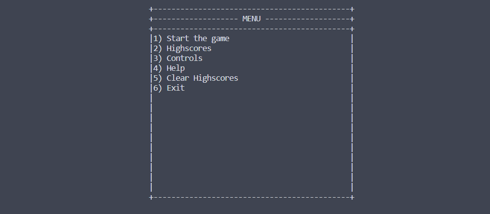

vagrant@zdeploy:~$ neofetch
_,met$$$$$gg. vagrant@zdeploy
,g$$$$$$$$$$$$$$$P. ---------------
,g$$P" """Y$$.". OS: Debian GNU/Linux 11 (bullseye) x86_64
,$$P' `$$$. Host: VirtualBox 1.2
',$$P ,ggs. `$$b: Kernel: 5.10.0-26-amd64
`d$$' ,$P"' . $$$ Uptime: 11 mins
$$P d$' , $$P Packages: 492 (dpkg)
$$: $$. - ,d$$' Shell: bash 5.1.4
$$; Y$b._ _,d$P' Resolution: preferred
Y$$. `.`"Y$$$$P"' Terminal: /dev/pts/0
`$$b "-.__ CPU: AMD Ryzen 5 5600 (2) @ 3.499GHz
`Y$$ GPU: 00:02.0 VMware SVGA II Adapter
`Y$$. Memory: 72MiB / 1970MiB
`$$b.
`Y$$b.
`"Y$b._
`"""
chmod +x exo1.shls -l que les permissions du script permettent de l'exécutervagrant@zdeploy:~$ chmod +x exo1.sh
vagrant@zdeploy:~$ ls -l
total 4
-rwxr-xr-x 1 vagrant vagrant 921 Nov 6 22:29 exo1.sh
./exo1.shvagrant@zdeploy:~$ tree exo1
exo1
├── bin
│ ├── bash
│ ├── ls
│ └── msnake
├── lib
│ ├── libc.so.6
│ ├── libdl.so.2
│ ├── libncurses.so.6
│ ├── libpcre2-8.so.0
│ ├── libpthread.so.0
│ ├── libselinux.so.1
│ ├── libtinfo.so.6
│ └── terminfo
│ ├── E
│ │ ├── Eterm
│ │ └── Eterm-color -> Eterm
│ ├── a
│ │ └── ansi
│ ├── c
│ │ ├── cons25
│ │ ├── cons25-debian
│ │ └── cygwin
│ ├── d
│ │ └── dumb
│ ├── h
│ │ └── hurd
│ ├── l
│ │ └── linux
│ ├── m
│ │ ├── mach
│ │ ├── mach-bold
│ │ ├── mach-color
│ │ ├── mach-gnu
│ │ └── mach-gnu-color
│ ├── p
│ │ └── pcansi
│ ├── r
│ │ ├── rxvt
│ │ ├── rxvt-basic
│ │ ├── rxvt-m -> rxvt-basic
│ │ ├── rxvt-unicode
│ │ └── rxvt-unicode-256color
│ ├── s
│ │ ├── screen
│ │ ├── screen-256color
│ │ ├── screen-256color-bce
│ │ ├── screen-bce
│ │ ├── screen-s
│ │ ├── screen-w
│ │ ├── screen.xterm-256color
│ │ └── sun
│ ├── t
│ │ ├── tmux
│ │ └── tmux-256color
│ ├── v
│ │ ├── vt100
│ │ ├── vt102
│ │ ├── vt220
│ │ └── vt52
│ ├── w
│ │ ├── wsvt25
│ │ └── wsvt25m
│ └── x
│ ├── xterm
│ ├── xterm-256color
│ ├── xterm-color
│ ├── xterm-debian -> xterm
│ ├── xterm-mono
│ ├── xterm-r5
│ ├── xterm-r6
│ ├── xterm-vt220
│ └── xterm-xfree86
└── lib64
└── ld-linux-x86-64.so.2
sudo chroot exo1 msnake, ceci va :
vagrant@zdeploy:~$ sudo chroot exo1/ msnake

Tout fonctionne comme prévu. On peut désormais jouer à snake !!!
vagrant@zdeploy:~$ sudo apt install lxc
vagrant@zdeploy:~$ sudo lxc-create -n alpine-container -t download -- --dist alpine --release edge
| Option | Utilité |
|---|---|
| lxc-create | Créer un conteneur avec lxc |
| -n alpine-container | Nommé ce conteneur alpine-container |
| -t download | Utilisé une template de téléchargement |
| -- | Séparation des options de la commande et de la template |
| --dist alpine | Spécifie que nous voulons une distribution alpine |
| --release edge | Donne la version de la distribution, ici la dernière |
DIST RELEASE ARCH VARIANT BUILD
---
alpine edge amd64 default 20231105_13:00
alpine edge arm64 default 20231105_13:01
---
Architecture:
amd64
Downloading the image index
Downloading the rootfs
Downloading the metadata
The image cache is now ready
Unpacking the rootfs
---
You just created an Alpinelinux edge x86_64 (20231105_13:00) container.
vagrant@zdeploy:~$ sudo lxc-start -n alpine-container
vagrant@zdeploy:~$ sudo lxc-attach -n alpine-container
/ # apk add neofetch
/ # neofetch
.hddddddddddddddddddddddh. root@alpine-container
:dddddddddddddddddddddddddd: ---------------------
/dddddddddddddddddddddddddddd/ OS: Alpine Linux v3.18 x86_64
+dddddddddddddddddddddddddddddd+ Host: VirtualBox 1.2
`sdddddddddddddddddddddddddddddddds` Kernel: 5.10.0-26-amd64
`ydddddddddddd++hdddddddddddddddddddy` Uptime: 39 secs
.hddddddddddd+` `+ddddh:-sdddddddddddh. Packages: 35 (apk)
hdddddddddd+` `+y: .sddddddddddh Shell: bash 5.2.15
ddddddddh+` `//` `.` -sddddddddd Resolution: preferred
ddddddh+` `/hddh/` `:s- -sddddddd CPU: AMD Ryzen 5 5600 (2) @ 3.499GHz
ddddh+` `/+/dddddh/` `+s- -sddddd Memory: 5MiB / 1970MiB
ddd+` `/o` :dddddddh/` `oy- .yddd
hdddyo+ohddyosdddddddddho+oydddy++ohdddh
.hddddddddddddddddddddddddddddddddddddh.
`yddddddddddddddddddddddddddddddddddy`
`sdddddddddddddddddddddddddddddddds`
+dddddddddddddddddddddddddddddd+
/dddddddddddddddddddddddddddd/
:dddddddddddddddddddddddddd:
.hddddddddddddddddddddddh.
vagrant@zdeploy:~$ sudo apt install debootstrap systemd-container
vagrant@zdeploy:~$ mkdir ~/debian10
vagrant@zdeploy:~$ sudo debootstrap buster ~/debian10 http://deb.debian.org/debian/
vagrant@zdeploy:~$ tree -d -L 1 debian10/
debian10/
├── bin -> usr/bin
├── boot
├── dev
├── etc
├── home
├── lib -> usr/lib
├── lib32 -> usr/lib32
├── lib64 -> usr/lib64
├── libx32 -> usr/libx32
├── media
├── mnt
├── opt
├── proc
├── root
├── run
├── sbin -> usr/sbin
├── srv
├── sys
├── tmp
├── usr
└── var
vagrant@zdeploy:~$ sudo systemd-nspawn -D ~/debian10
Spawning container debian10 on /home/vagrant/debian10.
Press ^] three times within 1s to kill container.
root@debian10:~#
root@debian10:~# apt install neofetch
root@debian10:~# neofetch
_,met$$$$$gg. root@debian10
,g$$$$$$$$$$$$$$$P. -------------
,g$$P" """Y$$.". OS: Debian GNU/Linux 10 (buster) x86_64
,$$P' `$$$. Host: VirtualBox 1.2
',$$P ,ggs. `$$b: Kernel: 5.10.0-26-amd64
`d$$' ,$P"' . $$$ Uptime: 3 hours, 34 mins
$$P d$' , $$P Packages: 223 (dpkg)
$$: $$. - ,d$$' Shell: bash 5.0.3
$$; Y$b._ _,d$P' CPU: AMD Ryzen 5 5600 6- (2) @ 3.499GHz
Y$$. `.`"Y$$$$P"' Memory: 88MiB / 1970MiB
`$$b "-.__
`Y$$
`Y$$.
`$$b.
`Y$$b.
`"Y$b._
`"""